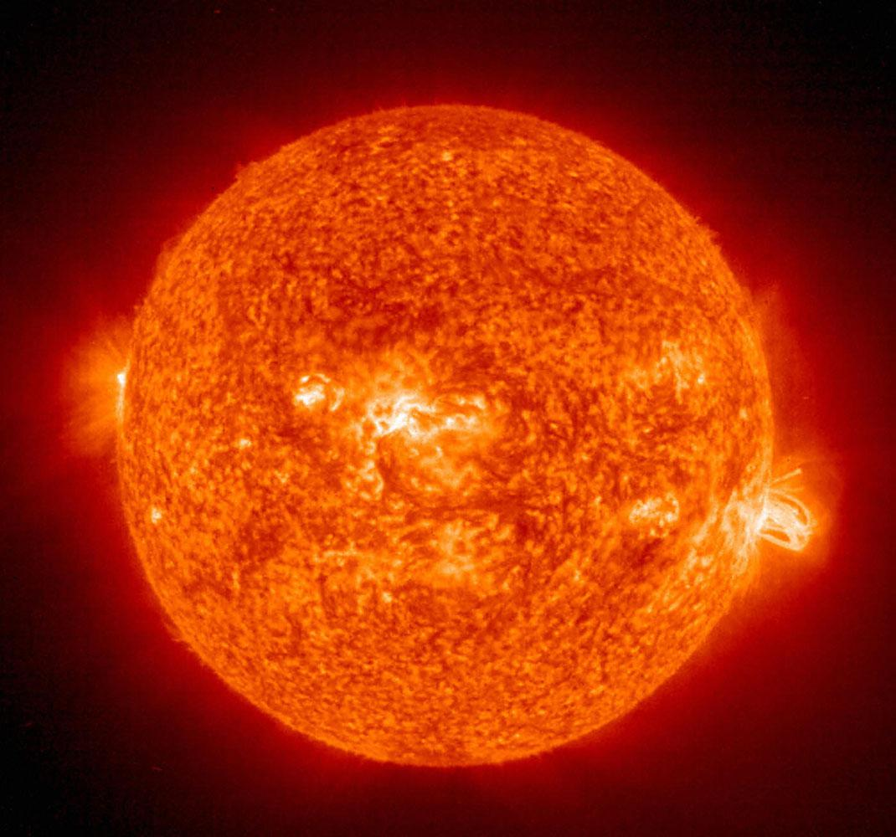

Well, finding it in the sky is very easy, Jupiter is one of the brightest objects in the sky, so you just have to look for a orange bright "star" in the sky and you'll find it! But, what's the difference between a planey like Jupiter and a orange bright star like Antares? Well, the most importante difference between the looking of a planet and a star is that the star twinkle while the planet do not.
Why is Jupiter called a gas planet?
It is called like that because its surface a dense layer of gases such as nitrogen, helium , etc. In addition to possessing large amounts of dust. But its core is made by rock like the others planets of our solar system.
Could Jupiter be a star?

No, Jupiter could not be a star. Although its mass is thousands of times greater than the Earth is not enough to start doing this fusion process is carried out in all the stars. For this process to start must be a minimum mass as our sun which is 1.989 × 10 ^ 30 kg while the mass of Jupiter is 1,898 × 10 ^ 27 kg, the difference between the two masses is enormous, it is why the electromagnetic force that separates the atoms from one another even not collapse and deployed nuclear strong force can not fuse atomic core to create a new element and release energy.
Why Jupiter has a giant red spot?
This video of the Science Channel could explain it better than me